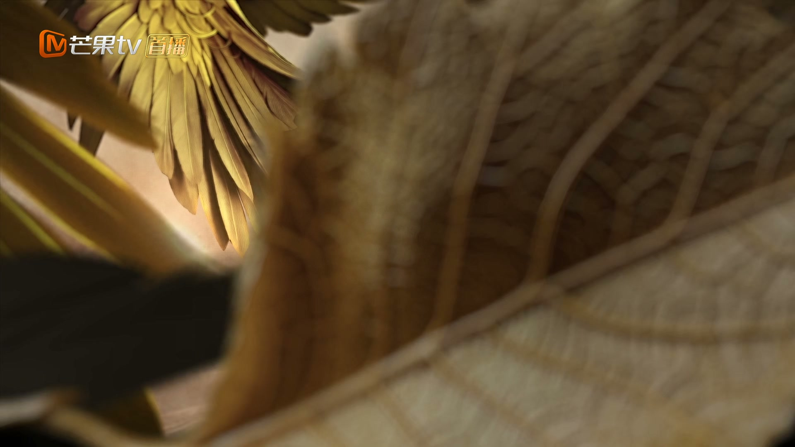
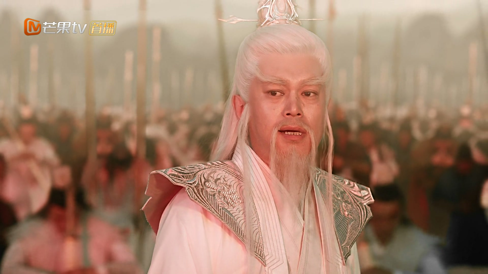
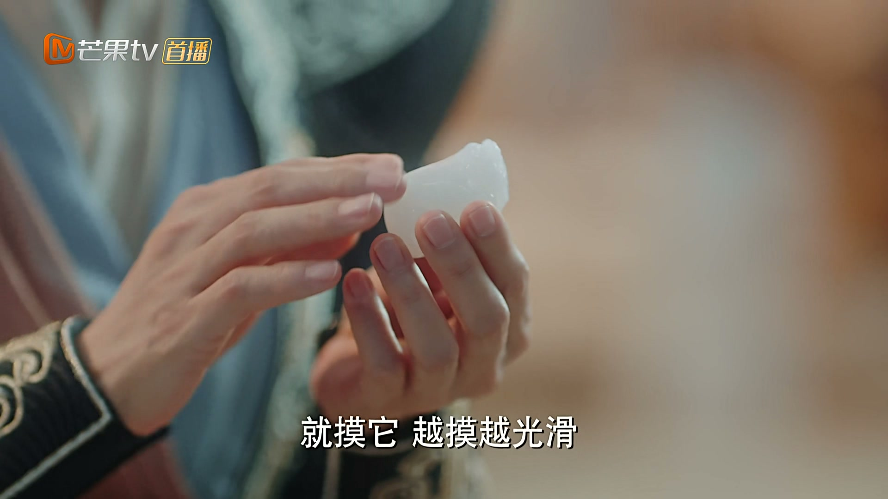
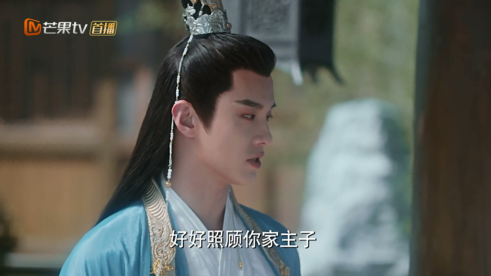
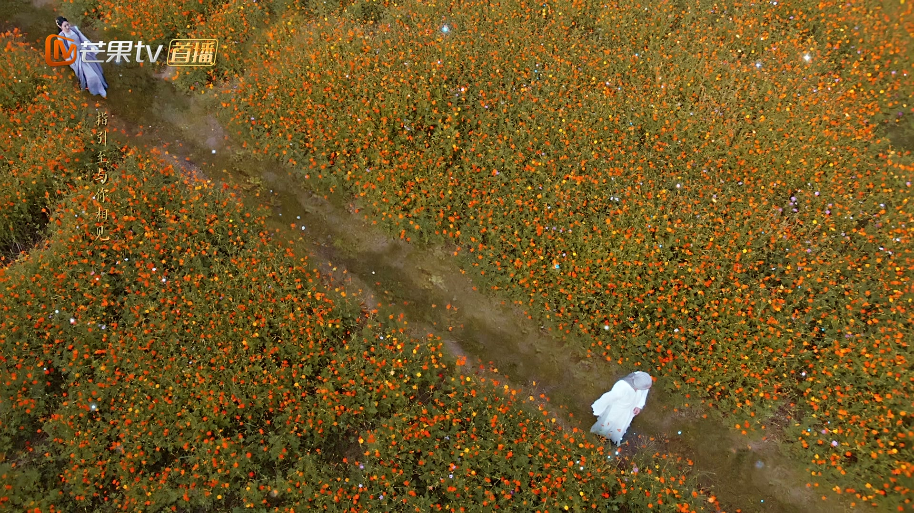
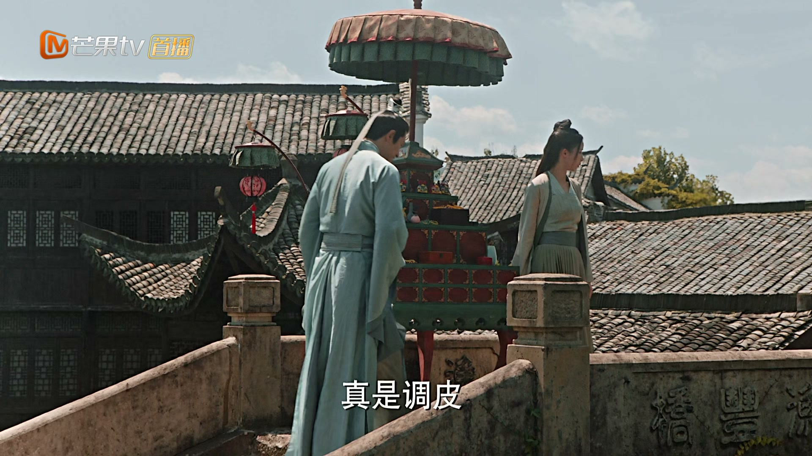
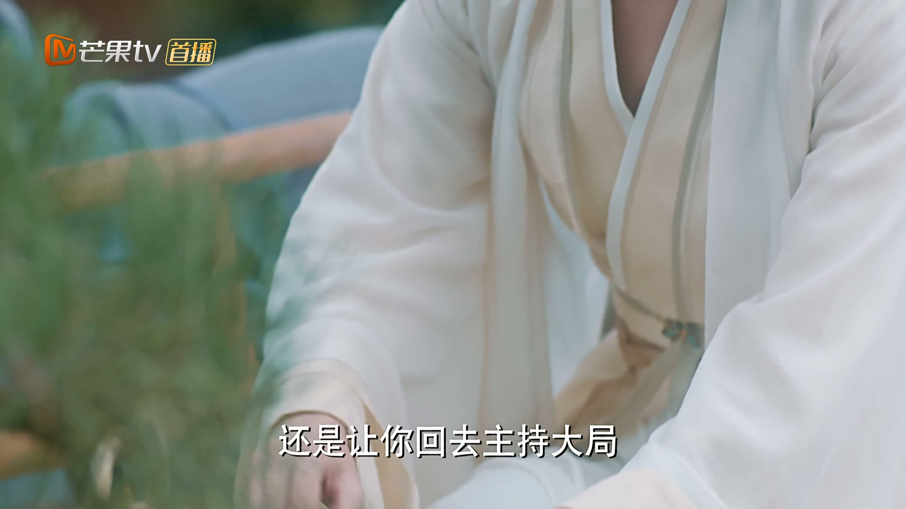
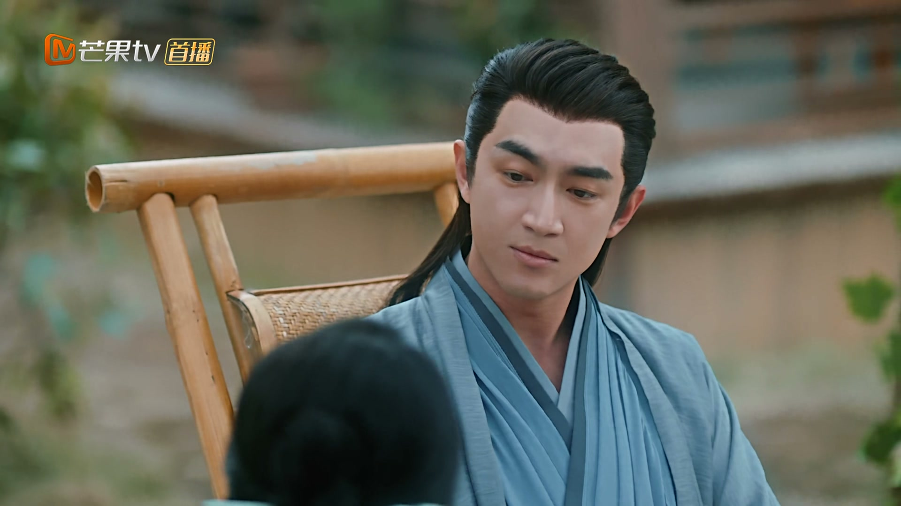
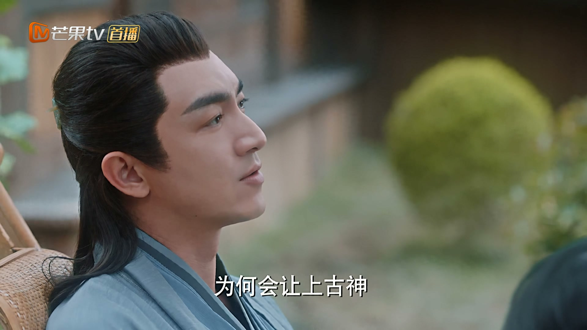
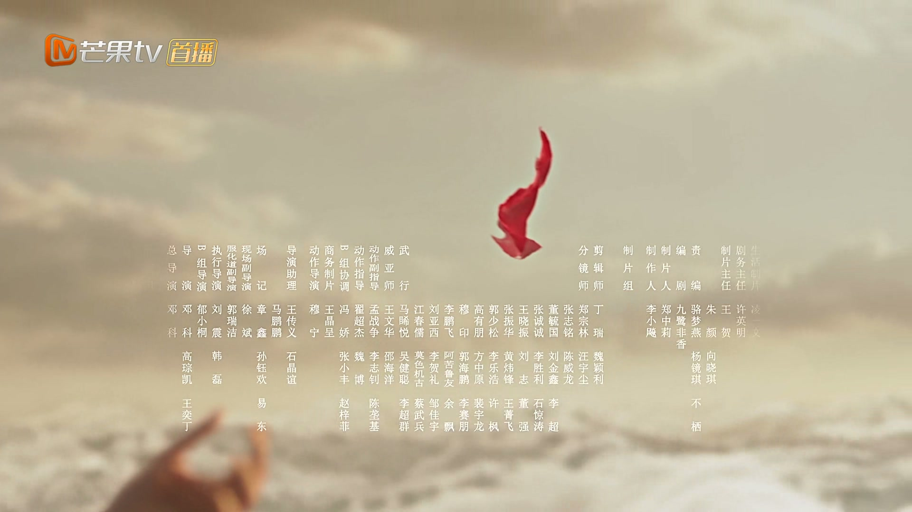

为他人仗义执言，是朋友最珍贵的品质
情境：天君迟迟不肯松口，幽兰与拂容君双双跪求开恩，替沈璃争回自由。
遇到这种情况，可以这样做
- 朋友落难时，敢于站出来替他说话。
- 「仗义」二字，在关键时刻才有分量。
- 真心为你好的人，会在你无助时递出手。

Drama Recap · 剧情图文总结
第 38 集 · 神君归来
墟天渊一役后，三界重归安宁。幽兰与拂容君求天君开恩，沈璃终于摆脱神明身份的禁锢。一年过去，行云小院的葡萄架下，沈璃独自思念——直到那个熟悉的身影再次出现。他说：上古诸神用最后的力量，从天道手中把他留了下来。
墟天渊一役后，天君终于松口，沈璃重获自由。仙灵两界重修于好，只有行云小院的葡萄架下，沈璃独自守着回忆。一年后，行止回来了——上古诸神用最后的力量，从天道手中把他留了下来。如今他神力尽失，不过一介凡仙，可沈璃说：「我当初爱上的，不过就是一个病弱的凡人。」
沈璃向天君求一个答案，幽兰与拂容君双双跪求天君开恩：神君虽已归天，可方才三界有目共睹，神君定是愿意和碧苍王在一起的。天君终于松口：「天君，你自由了，走吧。」
剧里的鸡毛蒜皮，往往是人生的缩影。这些情节不只是故事——当你在现实中遇到同样的处境时，它们能提醒你：先做什么、别做什么、怎么说才有效。
情境：天君迟迟不肯松口，幽兰与拂容君双双跪求开恩，替沈璃争回自由。
情境：沈璃守着行止的痕迹过了一年，眼见回忆渐淡，却从没想过放下。
情境：行止归来，沈璃却不敢问他如何回来的——怕一问，梦就碎了。
情境：行止神力尽失沦为凡仙，却坦然问沈璃可嫌弃，把「凡人」过出了新的滋味。
情境：沈璃的愿望不是什么山盟海誓，而是「每个夏天帮我摘葡萄」这样的日常小事。
情境：历劫之后，灵尊主动登门致谢，天君坦然相迎，仙灵两界重修于好。

幽兰跪在天君殿前，恳请天君网开一面：神君虽已归天，可方才三界有目共睹，神君定是愿意和碧苍王在一起的。
拂容君也跪下求皇爷爷开恩。天君望着沈璃，终于松了口：「走吧，你自由了。」
从这一刻起，沈璃彻底摆脱了神明身份的禁锢。
关键台词 · KEY QUOTES

灵尊登门拜访天君，感谢仙界送来的灵石，两界携手共渡劫难。
「仙灵两界，本属同源。」灵尊与天君把盏言和，久违的安宁终于回到三界。
关键台词 · KEY QUOTES
天君命人将记载行止与沈璃旧事的「世纪之录」交给沈璃，说：哪天要是想神君了，就翻出来看看，免得给忘了。
沈璃接过书卷，只道：不会忘的，都记得。拂容君在一旁劝她往前走，沈璃却答：「我为什么要走出去啊。」
关键台词 · KEY QUOTES

时光飞逝，行云小院的葡萄藤爬满墙头。沈璃独自坐在院里，望着旧时的物件出神。
「你的痕迹一直都在……可回忆似乎越来越少了。会不会有哪一天，我也终将把你遗忘？」她轻声自语，守着这份越来越淡、却从未断过的念想。
关键台词 · KEY QUOTES

拂容君提着一沓话本子来找沈璃解闷，里面写满了行止与沈璃的故事，还绘声绘色地念给她听。
沈璃又好笑又嫌弃，直说他这「悠闲日子过得实在太久」。可翻到书页里那些旧日场景，她还是会不自觉地怔住。
关键台词 · KEY QUOTES

沈璃在集市挑了几匹布，说要给院里的物件换新。摊贩认出这位灵界的王爷，殷殷问好，她笑着应下。
凡人的日子平淡安稳，她挑布、还价、付钱，脚步从容——像极了当年在行云小院里被投喂的时光。
关键台词 · KEY QUOTES

沈璃回到行云小院，院门前站着那个熟悉的身影——行止回来了。
她有一肚子话，却只问出口一句。行止笑着应她：我早就将我的仙人，交给你了。
沈璃告诉他：仙门之人又来找过他，想请他回去主持大局，她已经替他说了——如今他不过是个普通仙人，无人再来打扰。
关键台词 · KEY QUOTES

行止问她：为何从不问我，是如何回来的？
沈璃低头：「我不敢问。要是我问了，发现这是梦一场，我该怎么办。」
行止轻轻握住她的手：不是梦。
关键台词 · KEY QUOTES

行止道出归来的缘由：上古诸神灵位上的静光消失，是老朋友们用最后的力量，从天道手中把他留了下来。
他顿悟：天道让上古神以人形行走，本就是让神明也尝尝人间百味。如今他神力尽失，不过一介凡仙，问沈璃可嫌弃。
沈璃笑着摇头：「我不嫌弃啊。我当初爱上的，不过就是一个病弱的凡人。」
关键台词 · KEY QUOTES

沈璃提醒行止：「你好像还欠我两个愿望。」行止问哪两个，她笑着说：第一个，以后的每个夏天，你都要帮我摘葡萄。
「这第二个愿望，今日不说——因为它要花很久很久的时间去完成。」
葡萄架下，两人相视而笑。有人问沈璃可还适应这样的日子，她望着行止答道：很好。这便是一生所求。
关键台词 · KEY QUOTES
天君开恩后重获自由，守着行云小院的回忆度过一年，直到行止归来；许下第一个愿望「每个夏天摘葡萄」。
被老朋友们用最后的力量从天道手中留下，神力尽失沦为凡仙，回到行云小院与沈璃重逢。
与拂容君一同跪求天君开恩，为沈璃争回自由。
求皇爷爷开恩，劝沈璃放下往事，又写话本逗她开心，刀子嘴豆腐心。
终于松口放沈璃自由，把记载行止与沈璃旧事的「世纪之录」相赠。
登门拜访天君致谢，仙灵两界重修于好，三界重归安宁。
一年之后，行云小院门前，那个熟悉的身影再次出现——重逢的瞬间，所有的等待都有了答案。
「要是我问了，发现这是梦一场，我该怎么办。」沈璃小心翼翼的幸福，令人心疼又动容。
「我当初爱上的，不过就是一个病弱的凡人。」神力尽失的行止，在沈璃眼里仍是当初那个人。
第一个愿望「每个夏天帮我摘葡萄」，第二个愿望留白——要花很久很久的时间去完成。
幽兰与拂容君双双跪求，天君一句「你自由了」，沈璃终于挣脱神明身份的牢笼。
沈璃留下第二个愿望不说，要花很久很久的时间去完成——正是大结局里的求婚与婚约。
众神以最后力量留下行止，天道规则的隐喻贯穿全剧——神明退场，凡人登场。
行止沦为凡仙，两人归隐人间的结局已定，往后的日子将与凡人为伍。
「每个夏天摘葡萄」的具体约定，将贯穿两人的余生，也预示着一个孩子会在葡萄架下长大。
仍有仙门之人想请行止回去主持大局，虽被沈璃挡下，却说明他的过往并未真正了结。